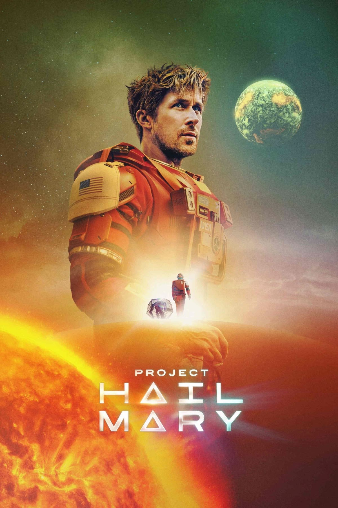

Project Hail Mary
Gamtos mokslų mokytojas pabunda vienas kosminiame laive. Atmintis pamažu grįžta, ir jis sužino apie misiją sustabdyti paslaptingą
medžiagą, naikinančią Žemės Saulę. Galiausiai jis supranta, kad netikėta draugystė gali būti raktas į sėkmę.
Metai: 2026
Trukmė: 2val 36min
Režisierius: Phil Lord, Christopher Miller
Aktoriai: Ryan Gosling, Sandra Huler, James Orliz